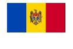

Contemporary Moldova
Present day Moldova was carved from Romania (Bessarabia) and Ukraine (Transnistria) in 1940 and annexed to the Soviet Union.
Two thirds of Moldovans are of Romanian descent. The languages are virtually identical and they share a common cultural heritage,
although separate recent histories and at times, strained relations.
Moldova is one of the poorest countries in Europe.
Language
An Eastern Romance Language, it is officially called Moldovan, but its relationship to Romanian can be likened
to that of English spoken in the USA and in the UK,
however, the issue of whether it is a separate language or not remains a controversial and politicized issue.
The Latin alphabet was reintroduced to replace the Soviet imposed Cyrillic alphabet on August 31, 1989,
a date celebrated as the 'Limba Noastra' ('Our Language') day.
Moldova
QUICK FACTS
Population:
3.6 million
Area:
slightly larger than Maryland
Capital:
Chisinau (650,000)
Languages:
Moldovan (official), Russian, Gagauz (a Turkish dialect)
Flag:
Moldovans in the USA
Emigration of Moldovans increased with the country's independence and subsequent conflicts in the 1990s
and peaked following the economic crisis of the late 1990s.
Roughly a quarter of the population emigrated to Russia, Ukraine and Romania.
Today most emigration is labor migration. There are roughly 25,000 Moldovans in the US.